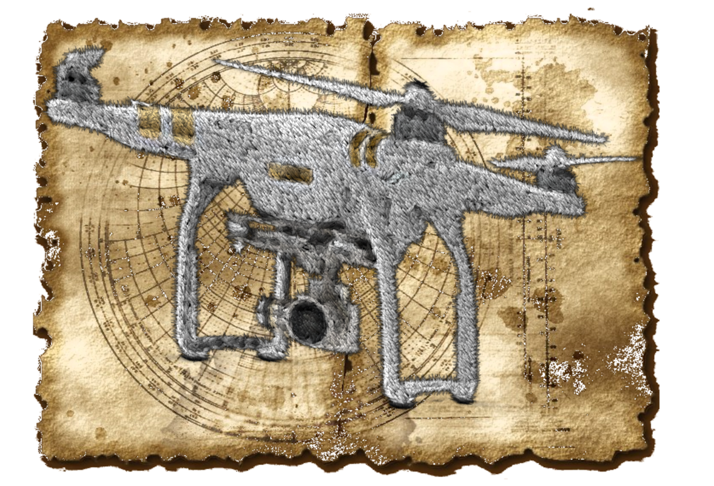
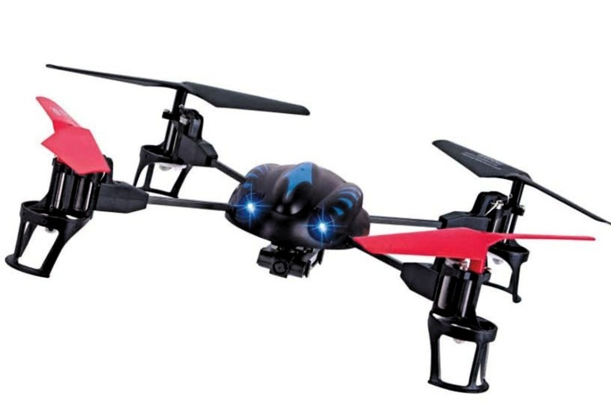
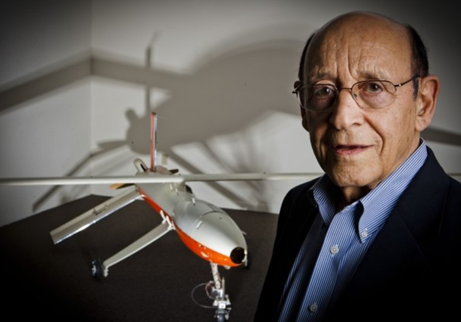
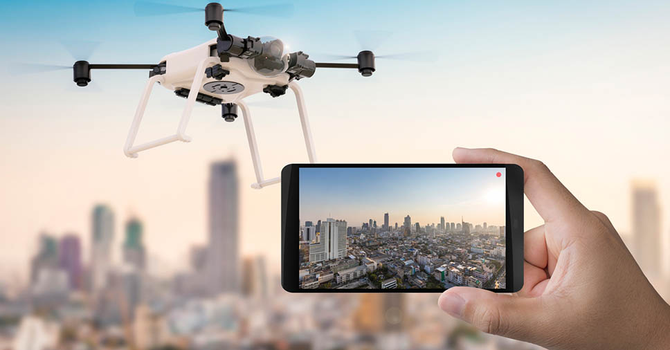
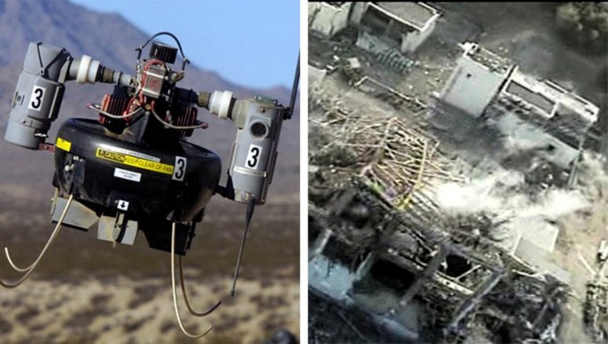

A HISTÓRIA DOS DRONES!
A história dos drones iniciou-se com uma inspiração em bombas voadoras alemãs do tipo V-1, popularmente conhecidas como buzz bomb. Recebeu esse nome devido ao barulho que fazia enquanto voava, sendo criada pela Alemanha, durante a Segunda Guerra Mundial. Apesar de ser limitada e considerada um alvo fácil, conseguiu um sucesso considerável com sua velocidade constante e por voar somente em linha reta, atingindo um número de mais de 1.000 bombas V-1 lançadas. Alguns anos mais tarde, ainda na Segunda Guerra mundial, foi criada sua sucessora, a bomba V-2.

https://pt.wikipedia.org/wiki/V-1
A história dos drones lembra muito o surgimento da Internet. Podemos imaginar o mundo antes da internet, as grandes navegações, a forma como eram enviadas as cartas cartográficas e os mapas. Sabemos que assim que começou a globalização, as distâncias encurtaram-se e uma revolução começou.

Inicialmente ambos possuíam funções militares, e com o tempo tornaram-se acessíveis e ganharam mais adeptos. Os VANTs (veículos aéreos não tripulados) eram usados para reconhecimento de terrenos, permitindo uma visão aérea. Já serviram como apoio, e meio, de ataques e espionagem; até para enviar mensagens.

Surgiram por volta dos anos 60, mas foi durante os anos 80 que começaram a chamar atenção, por conta de seus usos militares. A grande vantagem em seu uso durante os anos 80, era a possibilidade de efetuar ações, que muitas vezes eram perigosas, sem necessariamente colocar uma vida em risco. Pois quem estivesse controlando estaria distante do drone, e o pior que poderia acontecer é o abatimento do objeto no ar. O que pouca gente sabe sobre a história dos drones é que ela tem por inspiração uma BOMBA. A popularmente conhecida buzz bomb, assim chamada por conta do barulho que fazia enquanto voava, foi desenvolvida pela Alemanha durante a Segunda Guerra Mundial. Apesar de sua simplicidade, o que a tornava alvo fácil em abates e interceptações, por voar apenas em linha reta e com velocidade constante, obteve um sucesso considerável. Embora não haja um número exato sobre o número de feridos e mortos pelas bombas, pode-se concluir que é um valor grande uma vez que foram lançadas mais de 1.000 bombas V-1. A V-1, conhecida como buzz bomb, não foi a única bomba do gênero criada. Alguns anos mais tarde, ainda no decorrer da Segunda Grande Guerra, foi criada a V-2. Mas a grande revolução foi no primeiro momento em que uma bomba com aquelas características surgiu: a V-1, que inspirou a história dos drones e toda a sua evolução deste então.
Quem inventou o drone?
O drone, como conhecemos hoje, foi inventado pelo israelita Abe Karem, engenheiro espacial responsável pelo drone americano mais temido e bem-sucedido.

“Eu só queria que os veículos aéreos não tripulados operassem com os mesmos padrões de segurança, confiabilidade e desempenho que aviões tripulados” (Abe Karem)
Segundo Karem, quando ele chegou nos Estados Unidos da América, em 1977, para controlar um drone eram necessárias 30 pessoas. Este modelo, o Aquila, voava em média alguns minutos mesmo com autonomia para 20 horas de voo. Vendo esta situação, Karem, fundou uma empresa a Leading System e utilizando pouca tecnologia: restos de madeira, fibra de vidro caseira e um morto igual aos que os karts, de corrida, usavam na época, deu origem ao Albatross. O Albatross chegou a ficar 56 horas no ar, sem ser necessária nenhuma recarga de baterias, e sendo operado apenas por 3 pessoas - contra 30 do Aquilla. Depois desta bela demonstração, Karem recebeu financiamento da DARPA para aprimorar o protótipo, e assim surgiu o Amber.
Definindo o que é um drone.
Frequentemente as pessoas escutam o termo pela primeira vez e se perguntam: o que é um drone? Um drone é um veículo aéreo, mas diferentemente de aviões e helicópteros, não são tripulados. São controlados remotamente e, muitas vezes, equipados com câmeras de alta qualidade. Foram utilizados por um tempo como brinquedo, uma evolução dos aeromodelos. Hoje há um grande e crescente mercado profissional para os pilotos. O processo de popularização dos veículos aéreos não tripulados é recente, e a imagem abaixo comprova:

A imagem acima foi obtida por meio do Google Trends, e mostra a popularização dos drones no decorrer do tempo. Em azul há o número de pesquisas pelo termo “drones” e em vermelho o número de pesquisas sobre os veículos aéreos não tripulados. Como é possível até 2010 quase não haviam pesquisas no buscador sobre os drones, e deste então o seu crescimento foi notável. Ao usarmos algumas ferramentas e filtrarmos os dados disponibilizados pelo Google, obtemos algumas informações interessantes sobre o Brasil, o mundo e os drones:
- Brasil é o país que mais pesquisa por drones da América Latina;
- Os três primeiros colocados no mundo, em número de pesquisas pelo termo “drones” é, em ordem decrescente: França, Noruega e Holanda;
- Os Estados Unidos aparecem logo após a Holanda, com cerca de 7 pontos a menos (em relação ao terceiro colocado);
- Nenhum estado do sudeste brasileiro aparece entre os 10 maiores que pesquisam sobre drones;
- E os três primeiros colocados do Brasil são, em ordem decrescente: Distrito Federal, Roraima e Tocantins.
- Isto nos dá uma noção de como a popularização dos drones, embora tenha se mostrado crescendo exponencialmente, ainda há muito espaço.
A evolução tecnológica permite que hoje quem deseja ser um piloto controle o seu drone diretamente do celular ou tablet.

Drone controlado pelo Smartphone
Alguns modelos inclusive podem ser controlados por meio do acelerômetro do smartphone. O que torna a experiência mais imersiva.
Usos dos Drones
Como era de se esperar, com o desenrolar da história dos drones, eles se espalharam e hoje estão sendo usados em vários lugares.
Os primeiros modelos eram utilizados apenas para fazer imagens, e vídeos, mas estão cada vez mais resistentes, autônomos e fortes.
A Amazon já conseguiu uma liberação dos EUA para fazer entregas usando drones.
O Facebook anunciou o seu projeto de levar internet às residências usando drones.
E cada vez mais novas usos para eles aparecem, os mais comuns, atualmente, são: 
Com a sua popularização, assim como ocorreu com a internet, o seu uso torna-se constante e faz total diferença na vida das pessoas.
Diariamente surgem diversas notícias sobre os drones, como, por exemplo: E como o caso noticiado da pizzaria que entregou uma pizza de pepperoni com um drone, e foi parar na mira da ANAC (Agência Nacional de Aviação Civil). A história dos drones não acabou
Ela está ocorrendo agora, neste exato momento. E cada vez mais os drones ganharão espaço e mudarão nossas vidas.
Como muitos pesquisadores defendem: a história não é estática. Ela é construída a cada dia, e com os drones não é diferente.
Achou interessante a história dos drones? Você pode fazer parte desta revolução, basta seguir o nosso guia passo-a-passo para comprar um drone. https://odrones.com.br/historia-dos-drones/